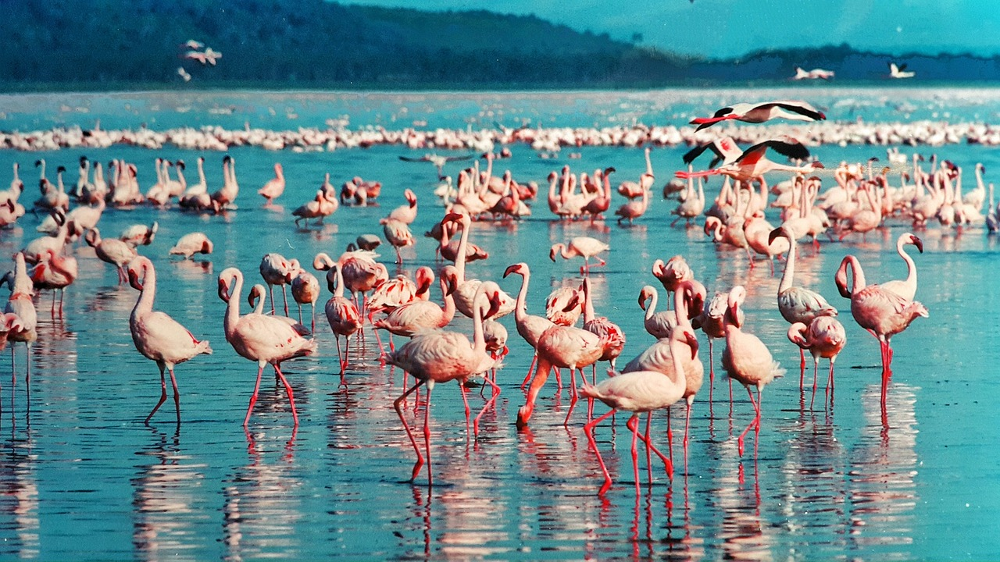

Lake Nakuru National Park
On the floor of the Great Rift Valley, surrounded by wooded and bushy grassland, lies the beautiful Lake
Nakuru National Park. Visitors can enjoy the wide ecological diversity and varied habitats that range
from Lake Nakuru itself to the surrounding escarpment and picturesque ridges. Lake Nakuru National Park
is ideal for bird watching, hiking,picnic and game drives.

Lake Nakuru National Park Day Trip
- Pick up from your Nairobi hotel or Airport in the morning at 06:00 hrs Depart Nairobi for Lake Nakuru National Park a drive of 3 hours to Nakuru.
- You will pass through The Great African Rift Valley escarpment view and you arrive lake Nakuru around 09:00 hrs with your packed lunch.
- Then you enter with game drive.
Lake Nakuru is among Kenya’s finest national parks. Flanked by rocky escarpments,
pockets of acacia forest and at least one waterfall, the park is gorgeous year-round
and is home to both black and white rhinos, lions, leopards, hippos and endangered
Rothschild’s giraffes. Rising water levels in 2014 forced the park’s famous pinky
flamingos to flee (although a small number of hundreds can be spotted), and the lake
is now hauntingly surrounded by drowned trees.
The southern end of the lake is the best place to see wildlife. The forested area
below Flamingo Hill is a favourite lion-spotting point – lionesses love to sleep in the
trees – while leopards frequent the same area, and are also sometimes seen around
the Makalia Falls.
Visitors can enjoy the wide ecological diversity and varied habitats that range from
Lake Nakuru itself to the surrounding escarpment and picturesque ridges.
You will have your lunch while doing your game drive.
After game drive until 15:30 hrs you will leave Lake for Nairobi arriving late in the evening.
Drop off at your respective hotel or Airport.
Here's a price package
- Price package for 2 passenger safari with Minibus : $ 440
- Price Per person $ 220
Prices for solo traveler or groups can be requested.
Tour Price Includes:
- Exclusive transport in a safari tour mini bus with a game viewing roof hatch and UHF radio
- National park & game reserve entrance fees as per itinerary
- Driver guide experienced in game spotting.
- Fuel, driver and car park fees, driver’s allowance.
- All park entry fees for clients, Mineral Water and packed Lunch
{% include "footer.html" %}